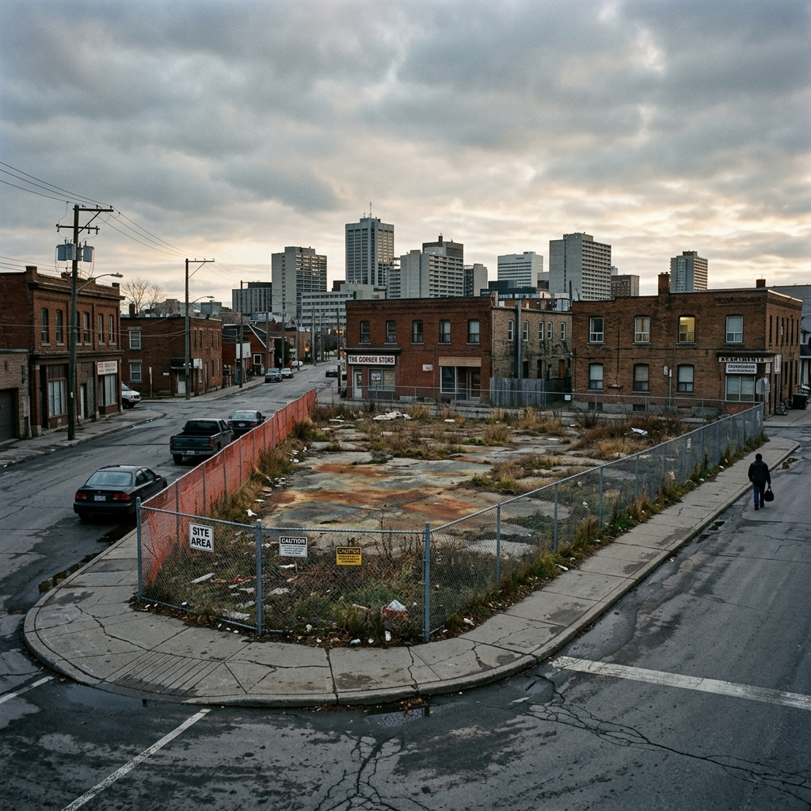

Act A — Thirty Thousand Idle Parcels
Ontario has an estimated 30,000 brownfield properties.
That number is almost certainly underreported. It includes only sites that have been formally identified through Phase I or Phase II Environmental Site Assessments. It does not count the former dry cleaners, the gas stations, the small plating shops, the old tanneries — the hundreds of thousands of mid-twentieth-century commercial properties where hazardous substances were used routinely and where no assessment has ever been commissioned because no one is trying to sell or develop the site.
Many of these parcels sit inside municipalities that desperately need housing. Some sit inside communities that have lost their industrial base and would benefit enormously from a community facility, a grocery store, or a mixed-use block where something other than a parking lot fills the corner. Some are owned by municipalities themselves, sitting in the capital asset register as a liability rather than an opportunity — land that generates no tax, provides no community benefit, and requires the city to carry environmental liability it cannot price and cannot discharge alone.
The mechanism that is supposed to activate these sites — matching brownfield properties to developers willing to take the remediation risk in exchange for development rights — works very poorly in practice. The problem is not a shortage of willing developers, or a shortage of competent remediators, or a shortage of applicable funding programs. The problem is that assembling a viable brownfield transaction requires simultaneously aligning four parties — municipality, developer, remediation firm, and project funder — each with distinct technical expertise, risk tolerance, and funding timeline. No single party holds enough of the picture to recruit the others. Deals that would benefit all four parties simply don’t happen because the coordination challenge exceeds anyone’s capacity to solve it alone.
This is a thin market problem: structurally willing parties on all sides, capable of creating significant mutual benefit, unable to find each other and align their interests within the constraints each faces.
The following is a fictional account of how a MarketForge-powered brownfield intermediary platform activates one of those thirty thousand parcels.
Act B — The Story
Beatriz
The lot on Elm Street in Sudbury had been in the Kiinawind Community Land Trust’s portfolio for six years.
The Trust had acquired it from the City of Greater Sudbury through a community benefit agreement associated with a downtown revitalization initiative, at a nominal price that reflected the city’s desire to move a problem off its books and into community hands. The parcel was 0.3 hectares — the footprint of a dry-cleaning operation that had closed in 1998. A Phase I ESA conducted before transfer had identified a recognized environmental condition: likely tetrachloroethylene (PCE) contamination from decades of dry-cleaning solvent storage and surface spills.
Beatriz Corbeil, the Trust’s executive director, had spent two years trying to figure out what to do with it.
She knew what the Trust needed to build: twelve to sixteen units of deeply affordable housing, ideally with ground-floor community space, in a neighbourhood where the Trust’s existing portfolio was already straining the waiting list. The site was perfectly located — two blocks from the downtown transit exchange, walking distance to services, well within the intensification corridor identified in the city’s Official Plan. If you could clean it up and build on it, it was exactly the right site for exactly the right project.
The problem was the if.
Beatriz had received one quote for a Phase II ESA and preliminary remediation assessment. It had come back at $85,000 just for the investigation phase, before a single tonne of contaminated soil had been considered for removal. The remediation estimate — a rough order of magnitude, not a firm quote — ranged from $600,000 to well over $1.2 million, depending on the depth and lateral extent of the plume and whether vapour intrusion into any future building structure required active mitigation.
The Trust had no mechanism to absorb that range of uncertainty. Its development financing was structured around a confirmed construction cost — a lender who had approved $2.3 million against a fully scoped project. An unknown remediation cost ranging across $600,000 could not be accommodated in that structure. And without a confirmed development project, none of the available remediation subsidy programs would flow: the Brownfields Financial Tax Incentive Program required a confirmed redevelopment plan, the City’s development charge exemption required a building permit application, and the federal contaminated sites program was limited to federally owned land.
She was caught in a sequential dependency loop. Every funding program required something she couldn’t obtain until she had something the program was supposed to fund.
Kenji
Kenji Pelletier-Nakamura ran a six-person environmental consultancy out of Sault Ste. Marie — Boreal Environmental Inc. — with a specific and acknowledged specialization: chlorinated solvent sites in northern Ontario.
He had a certified Qualified Person (QP) designation under Ontario Regulation 153/04, the record of site condition regulation administered by the Ministry of Environment, Conservation and Parks. He had completed Records of Site Condition for seventeen sites. Fourteen of the remediation projects had involved PCE or trichloroethylene contamination from dry-cleaning or degreasing operations. Two had involved in-situ chemical oxidation — a technique that was particularly effective for PCE plumes in the sandy overburden soils common across the Canadian Shield margin. His firm’s cost estimates were precise because they had the site-specific data from comparable northern Ontario geology.
Kenji was not a developer. He had never worked inside a community land trust financing structure. He had completed his remediation projects for industrial landowners who handled their own disposition, for municipalities that were decommissioning infrastructure, and for commercial vendors who needed a clean Record of Site Condition to close a sale.
He had never assembled a transaction that involved a development project, a housing non-profit, a municipal incentive program, and a federal remediation fund simultaneously. He didn’t know what a development charge exemption was or how it was triggered. He had heard of the Brownfields Financial Tax Incentive Program but had never navigated an application. He hadn’t known there was a community land trust in Sudbury with a PCE site and a housing mandate.
The work he could do for Beatriz — characterize the plume, model the remediation options, pin down the cost range to something a lender could underwrite — was exactly the work she needed done. And the housing project that would follow a successful remediation was exactly the kind of community outcome that the provincial and federal funding programs had been designed to support.
Neither of them could find the other.
The Platform
The Northern Ontario Brownfields Exchange was a sector-specific deployment of the MarketForge platform, operated by a partnership between the Greater Sudbury Economic Development Corporation, the Ontario Ministry of Municipal Affairs and Housing, and the Federation of Northern Ontario Municipalities. Its mandate was to activate brownfield sites across the region by matching three-way transactions: sites, development proponents, and qualified remediation services.
The platform’s KnowledgeSlot had been curated by the provincial brownfields team with a particular focus on the regulatory and funding sequencing that had historically blocked deals from forming. It contained the complete text and administrative guidance for O. Reg. 153/04, the BFTIP program criteria and application timeline, the City of Greater Sudbury’s brownfield development charge exemption by-law, the federal contaminated sites program eligibility matrix, and — critically — a framework for understanding which funding programs could be layered and in what sequence.
It also contained a deal structure template that had been developed from twelve successfully completed northern Ontario brownfield transactions over the previous four years. The template encoded what had worked: the specific order of approvals, the financing milestones that triggered subsidy disbursements, the roles that a QP needed to play at each stage of a structured remediation and development agreement.
When a Trust staff member registered the Elm Street site in the platform — prompted by a notice from the Federation of Northern Ontario Municipalities about the new exchange — the system conducted a site profile match against its remediator registry.
Boreal Environmental Inc. had registered six months earlier, following a presentation at the northern Ontario environmental professionals conference where the platform had been introduced. Kenji’s matching profile encoded his QP designation, his PCE specialization, his northern Ontario project history, his in-situ chemical oxidation experience, and his available capacity in the coming eighteen months.
The match was generated in under an hour: site with confirmed PCE recognized environmental condition, community land trust ownership with housing development mandate, urban intensification zone, no existing development partner.
Remediator with PCE specialization, northern Ontario site geology experience, QP status, and available capacity.
Score: high.
The Generative Match Story
The platform generated what it called a Brownfield Transaction Pathway — a document jointly addressed to Beatriz Corbeil at the Kiinawind Community Land Trust and to Kenji Pelletier-Nakamura at Boreal Environmental.
It was not a contract. It was not a valuation. It was a sequencing document: a description of how a transaction could be structured such that each party’s dependency on the others was resolved in the right order, using available programs, and within a timeline that was realistic given the regulatory steps involved.
The Pathway identified five things.
First, the regulatory dependency map. The most common reason brownfield deals don’t close, the document explained, is not the cost of remediation — it is that the funding programs are applied for in the wrong sequence. The BFTIP application required a development commitment that most developers felt they couldn’t make without a confirmed remediation cost. But the program guidelines allowed the application to be submitted based on a preliminary remediation estimate — not a firm quote — as long as a QP-certified Phase II ESA was in progress. Beatriz had not known that. Kenji had not known the Trust counted as an eligible applicant.
Second, the QP role in financing. Ontario’s brownfield financing programs were designed to flow through a QP-certified process. A Phase II ESA conducted by a QP under O. Reg. 153/04 created a formal record that lenders could rely on for underwriting — not because it guaranteed the remediation cost, but because it certified that the cost had been independently estimated by a regulated professional. Beatriz’s lender — a community development finance intermediary — would accept a QP-certified estimate as the basis for a contingent construction commitment, with a 20% contingency reserve. The remediation cost uncertainty could be managed within that structure. She had not known her lender had that flexibility.
Third, the development charge exemption trigger. The City of Greater Sudbury’s brownfield DC exemption did not require a building permit. It required a Record of Site Condition — a document that would be produced at the end of Kenji’s remediation process. The DC exemption, once triggered, would generate a credit of approximately $180,000 against the building permit fees. That credit could be used to retire part of the remediation financing. The loop that Beatriz thought was closed was actually open — just in a sequence she hadn’t understood.
Fourth, the in-situ option. The Pathway noted that Boreal’s experience with in-situ chemical oxidation at comparable northern Ontario PCE sites had produced a typical cost reduction of 35–45% compared to excavation-based remediation in sandy overburden sites. Based on the Phase I ESA’s description of the soil stratigraphy, the Elm Street site was a candidate for the in-situ approach — which would bring the preliminary remediation estimate range from $600K–$1.2M to approximately $380K–$620K. That narrower, lower range fit within the 20% contingency reserve the lender had indicated would work.
Fifth, a federal overlap. The Pathway flagged that community land trusts with affordable housing mandates on confirmed contaminated sites were eligible for supplemental funding through the Canada Mortgage and Housing Corporation’s National Housing Co-Investment Fund, which had a brownfield remediation cost component that could be applied after the Record of Site Condition was issued. Neither Beatriz nor Kenji had known this program applied to remediated brownfield developments. The platform’s KnowledgeSlot had cross-referenced the CMHC program guide — updated in 2024 — against the site and ownership profile.
Kenji read the Pathway on a Tuesday evening in Sault Ste. Marie. The first question he sent to Beatriz — through the platform’s secure message channel — was specific: “The Pathway has the BFTIP application going in parallel with the Phase II. Can you confirm whether the Trust has a development proponent of record — even a conditional one — or whether we need to structure the Trust itself as the development proponent for the application?”
It was a question that could only have been asked after reading the document.
Beatriz had the answer. The Trust was the development proponent. It had development experience. It met the eligibility criteria. She sent back the Trust’s most recent audited financial statements and a copy of its development approval for a comparable project in North Bay.
Six weeks later, they had signed a joint project agreement. Boreal commenced the Phase II ESA in early spring, in advance of the frost-free window needed for the soil borings.
Seventeen months after the platform introduced them, the Record of Site Condition for the Elm Street site was issued and filed with the Ministry. The BFTIP application — submitted based on the Phase II estimate — had been approved for $210,000. The DC exemption credit had been confirmed. The CMHC co-investment application was in review.
Beatriz’s board approved the construction tender in November.
Fourteen units of deeply affordable housing were going up on a lot that had generated nothing but liability for twenty-seven years.
Act C — The Structural Reading
This story is fictional. Beatriz Corbeil and Kenji Pelletier-Nakamura do not exist. Kiinawind Community Land Trust and Boreal Environmental Inc. are invented. But the market failure they illustrate is real, documented, and persistent across every Canadian province that has attempted a brownfield regeneration program.
The brownfield thin market has a structural feature that makes it unusually resistant to conventional solution: every party can see that a deal exists, but no single party holds enough of the picture to assemble it.
A municipality knows it has a liability. A community land trust knows it needs land. A remediator knows a site type they can handle efficiently. A lender knows its contingent commitment structure. A subsidy program has money waiting. None of these parties can see all five pieces simultaneously — and the coordination effort required to assemble them manually is typically not attempted. The site sits idle.
The expertise asymmetry runs in multiple directions at once. In most thin market scenarios, the asymmetry is bilateral: one party knows the supply-side domain, the other knows the demand-side domain. In brownfield transactions, the asymmetry is multilateral. The developer doesn’t know the regulatory sequence. The remediator doesn’t know the development financing structure. The municipality doesn’t know which funding programs can be stacked. The funder doesn’t know what a QP-certified estimate means for underwriting risk. Everyone is an expert in their own lane. No one can see the whole road.
This is precisely the problem that the Generative Match Story — in the form of a transaction pathway document — is designed to solve. The document is not a match notification. It is a shared intelligence product: a synthesis of the regulatory dependencies, financing mechanics, and technical constraints that no single party held in full. Its value is not that it tells each party something they couldn’t have found — it’s that it assembles what each party would have had to spend weeks of professional time to assemble independently, and it does so before either party has committed to the relationship.
The KnowledgeSlot curation challenge is unusually deep here. The domain knowledge required to generate the Pathway — the BFTIP application timing rules, the lender’s underwriting flexibility for QP-certified estimates, the DC exemption trigger mechanism, the CMHC program update — was not invented. It existed in regulatory documents, program guides, lender practice manuals, and updated administrative guidance. None of it was in the same place. Some of it — the 2024 CMHC update — was not widely known even to specialists. The KnowledgeSlot’s value compounds with every transaction it processes: each completed deal reveals new wrinkles in the regulatory sequencing that are curated back into the knowledge base for the next deal.
The sponsor structure is civic infrastructure. In most MarketForge deployments, the sponsor is a trade association, a supercluster funder, or an industry body. In the brownfield context, the natural sponsor is a coalition of municipal economic development agencies, provincial housing ministries, and regional development bodies — all of whom bear the cost of idle brownfield sites through foregone tax revenue, liabilities, and deferred housing supply. The platform’s operational costs are small relative to the value of a single activated site. At Ontario’s scale of 30,000 brownfields, the cost-benefit calculation is not close.
The contaminated lot on Elm Street was not a failure of will or a failure of funding. It was a failure of coordination across parties who all wanted the same outcome and couldn’t find a shared starting point. The platform’s job was to build that starting point before the first meeting.
The characters, companies, and specific project details in this story are fictional. The City of Greater Sudbury, the Ontario Ministry of Municipal Affairs and Housing, the Federation of Northern Ontario Municipalities, the Brownfields Financial Tax Incentive Program, Ontario Regulation 153/04, the Canada Mortgage and Housing Corporation’s National Housing Co-Investment Fund, and the City of Greater Sudbury’s brownfield development charge exemption are real institutions and programs. Their general mandate, eligibility criteria, and regulatory structure are accurately characterized as of the date of publication.
DeeperPoint is developing the open-source tools that underpin platforms like the one described here. Learn more about the thin market problem, the MarketForge platform, and who these tools are designed to serve.